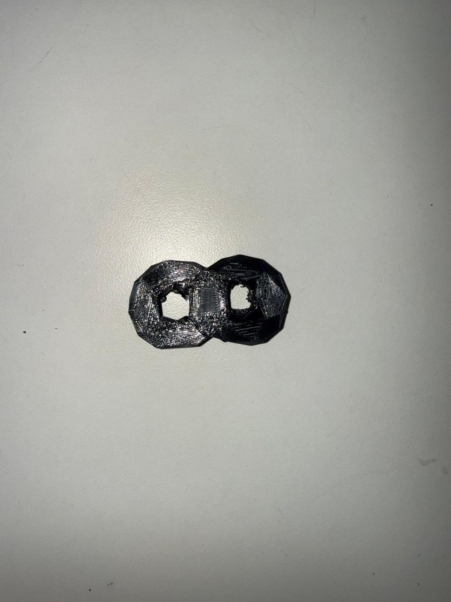

Project 05
Tried to build a 3-d infinity symbol, used this as an opportunity to explore the capabilities of fusion outside of sketching. Played around with torus, fillet, and their generative tool for fun. The middle part connectint the 2 torus's was generated and then modified. Found it to be a fun activity even though the AI generator is pretty barebones.

Here's a minimal version of my gearbox for the final project. It is inspired off of this https://youtu.be/oatdfy7O9ys?t=107. I will add the version with it assembled along with stands here soon!